- Generated by
 1.16.1
1.16.1
|
README preview
|
This program solves a Poisson problem on an agglomerated polytopal mesh using a symmetric interior penalty discontinuous Galerkin (SIPG) method. Agglomerates are constructed by an R-tree based spatial indexing strategy, following the approach proposed in [2]. In addition, a graph-based METIS partitioner is also provided in this program for comparison.
As in the tutorial programs, type
cmake -DDEAL_II_DIR=/path/to/deal.II .
on the command line to configure the program. After that you can compile with make and run with either make run or using
./agglomeration_poisson
on the command line.
Running the program produces two kinds of output:
The program prints a short summary including:
The program writes two .vtu files for each run:
These files can be visualized in ParaView to inspect both the agglomeration structure and the computed solution.
We consider the Poisson problem in a bounded, simply connected domain \(\Omega \subset \mathbb{R}^d \), \(d = 2,3\). The strong formulation reads
\begin{align*} -\Delta u &= f && \text{in } \Omega, \\ u &= u_D && \text{on } \partial\Omega, \end{align*}
where the right-hand side satisfies \(f \in L^2(\Omega) \) and the prescribed Dirichlet data satisfy \(u_D \in H^{1/2}(\partial\Omega) \).
The corresponding weak formulation is: find \(u \in H^1(\Omega)\) with \(u = u_D \) on \(\partial\Omega \) such that
\begin{equation} \int_{\Omega} \nabla u \cdot \nabla v \,\mathrm d\mathbf{x} =\int_{\Omega} f\, v \,\mathrm d\mathbf{x} \qquad \text{for all } v \in H_0^1(\Omega). \end{equation}
We discretize the weak formulation by a symmetric interior penalty discontinuous Galerkin (SIPG) method on the agglomerated polytopal mesh \(\mathcal{T}_h \), whose elements \(K \in \mathcal{T}_h \) are mutually disjoint open polygons (for \(d=2 \)) or polyhedra (for \(d=3 \)). For each element we denote its diameter by
\[ h_K := \operatorname{diam}(K). \]
The mesh skeleton is given by
\[ \Gamma := \bigcup_{K \in \mathcal{T}_h} \partial K, \]
and we denote by \(\Gamma_{\mathrm{int}} \) the union of interior faces, while \(\Gamma_{\mathrm D} := \Gamma \cap \partial\Omega \) collects the Dirichlet boundary faces.
The discrete space \(V_h \) consists of element-wise polynomials of degree at most $p$ on each \(K \in \mathcal{T}_h \). For \(u_h, v_h \in V_h \) we use the broken gradient \(\nabla_h \) and the standard jump and average operators \([\![\cdot]\!]\) and \(\{\!\!\{\cdot\}\!\!\}\) on faces.
The DG formulation reads: find \(u_h \in V_h \) such that
\begin{equation} B(u_h,v_h) = l(v_h) \qquad \forall\, v_h \in V_h, \end{equation}
with
\begin{align*} B(u_h,v_h) &= \int_{\Omega} \nabla_h u_h \cdot \nabla_h v_h \,\mathrm d\mathbf{x} \\ &\quad - \int_{\Gamma} \Bigl( \{\!\!\{\nabla u_h\}\!\!\} \cdot [\![v_h]\!] + \{\!\!\{\nabla v_h\}\!\!\} \cdot [\![u_h]\!] \Bigr)\,\mathrm d s \\ &\quad + \int_{\Gamma} \sigma \,[\![u_h]\!] \cdot [\![v_h]\!] \,\mathrm d s, \end{align*}
and
\begin{equation} l(v_h) = \int_\Omega f\, v_h \,\mathrm d\mathbf{x} + \int_{\Gamma_{\mathrm D}} u_D \bigl(\sigma v_h - \nabla v_h \cdot \mathbf n\bigr)\,\mathrm d s. \end{equation}
The penalty parameter is chosen as
\begin{equation} \sigma(\mathbf x) = C_\sigma \begin{cases} \dfrac{p^2}{h_K}, & \text{if } \mathbf x \in \partial K \cap \partial\Omega, \\[0.5em] \dfrac{p^2}{\min\{h_K^+,h_K^-\}}, & \text{if } \mathbf x \in \Gamma_{\mathrm{int}}, \end{cases} \end{equation}
where \(h_K^\pm \) are the diameters of the two elements sharing the interior face, $p$ is the polynomial degree, and we fix \(C_\sigma = 10 \) in this program.
This scheme is well posed and admits optimal-order a priori error estimates. More precisely, assuming that \(u|_K \in H^{s+1}(K) \) for all \(K \in \mathcal{T}_h \) and some \(1 \le s \le p \), there exists a constant \(C > 0 \), independent of \(h \), such that
\[ \|u - u_h\|_{L^2(\Omega)} \le C\, h^{s+1} \, |u|_{H^{s+1}(\Omega)}, \]
and
\[ \|\nabla(u - u_h)\|_{L^2(\Omega)} \le C\, h^{s} \, |u|_{H^{s+1}(\Omega)}. \]
We refer to~[1] for details of the analysis.
Agglomeration is a key ingredient for constructing polytopic meshes. This program supports two strategies for generating agglomerates, corresponding to the choices metis and rtree. In this example, we mainly focus on the rtree strategy, which is the method developed and introduced in the work [2].
In the rtree option, axis-aligned bounding boxes of all fine cells are inserted into a spatial R-tree. Agglomerates are obtained by grouping the cells whose bounding boxes belong to the same node at a user-selected extraction level of the tree. This purely geometric strategy does not require external graph partitioners and is typically fast and scalable. The number and shape of the agglomerates are determined by the R-tree structure and the chosen level.
This approach is particularly suitable for multilevel methods, where a nested agglomerated hierarchy is desirable.
At the data-structure level, we distinguish leaf nodes and internal nodes:
As a result, each internal node represents a spatial grouping of the objects below it.
The R-tree is used here as a geometry-aware structure for grouping cell bounding boxes. The main design targets are:
These criteria improve the spatial quality of the hierarchy and typically lead to better grouping and query behavior.
To make the R-tree construction more intuitive, we first illustrate the relation between geometric objects, their minimum bounding rectangles (MBRs), and the corresponding R-tree hierarchy. The left image shows geometric objects together with their enclosing MBRs, while the right image shows the associated tree structure (leaf and internal nodes). This visual example helps explain how the hierarchical grouping is later used to extract agglomerates.
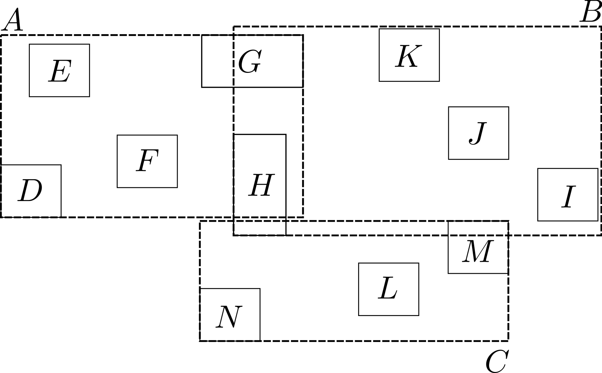
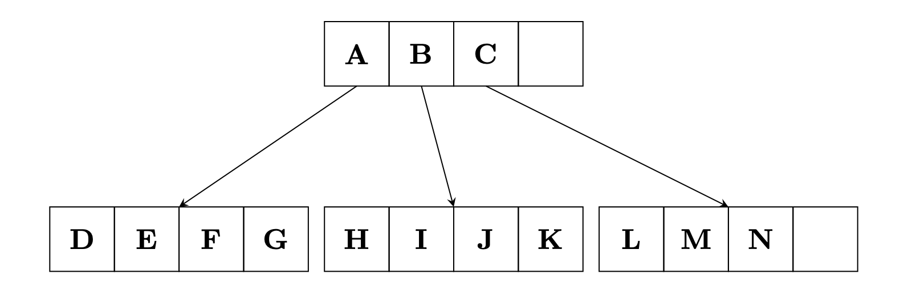
Given a collection of cells (or cut-cell bounding boxes), we:
This produces a sequence of nested agglomerated meshes, which can be used in multilevel solvers and preconditioners.
For the agglomeration workflow considered here, the R-tree-based extraction has the following practical features:
These properties make the R-tree approach convenient for constructing nested agglomerated meshes in multilevel finite element and DG settings.
Given a collection of fine-level cells (or cut-cell bounding boxes), we proceed as follows:
This yields a nested hierarchy with natural parent-child relations across levels.
Using an R-tree in the agglomeration pipeline has two practical advantages:
This is the key mechanism used later to build nested agglomerated meshes for multilevel methods and DG discretizations.
For illustration, the following images show the R-tree based agglomeration on a structured fine mesh:
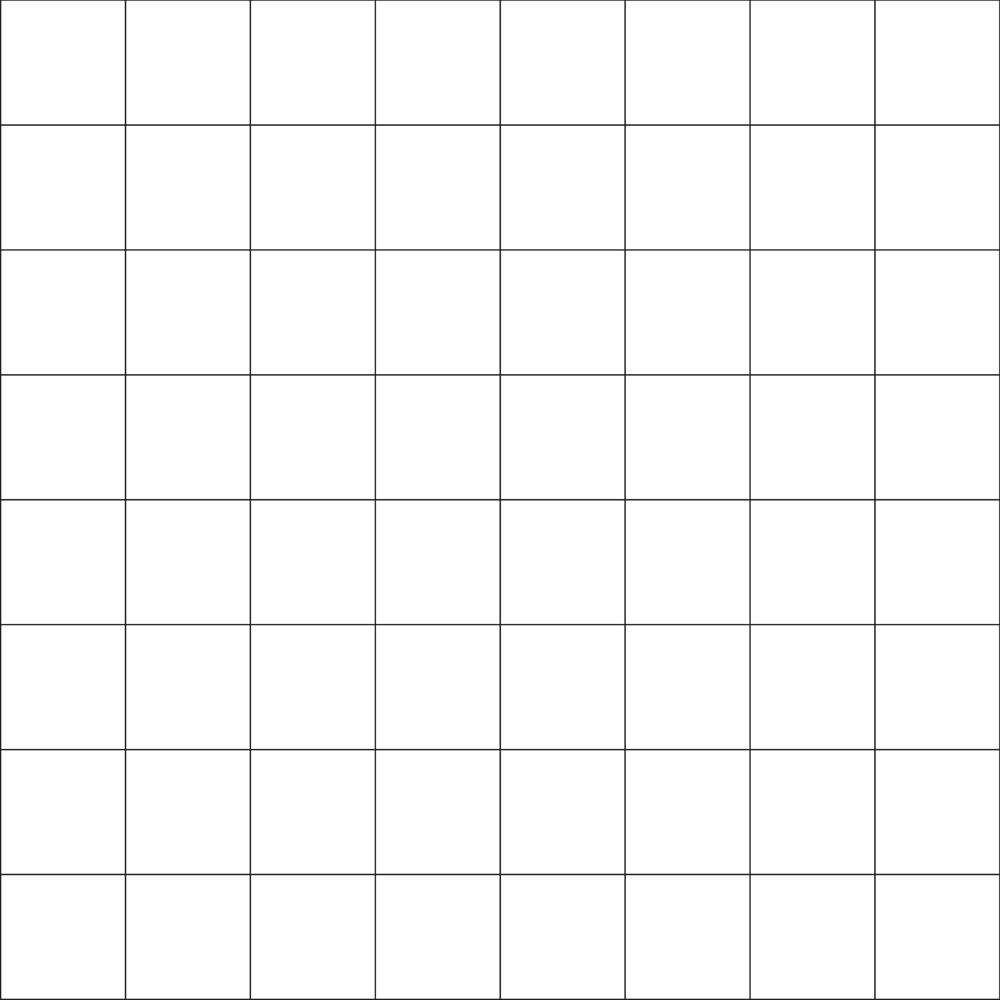
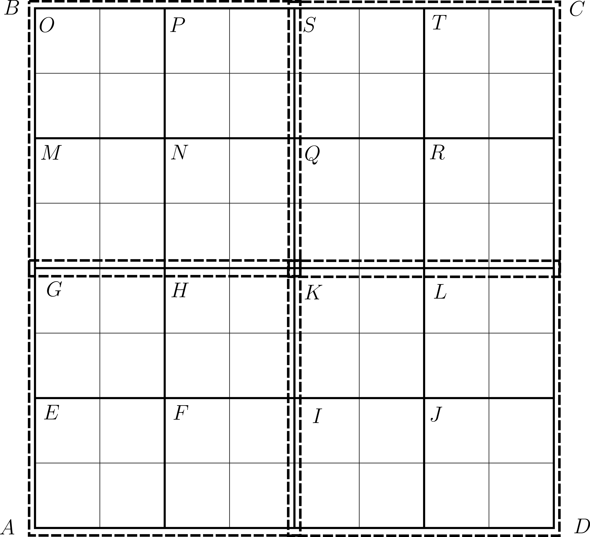
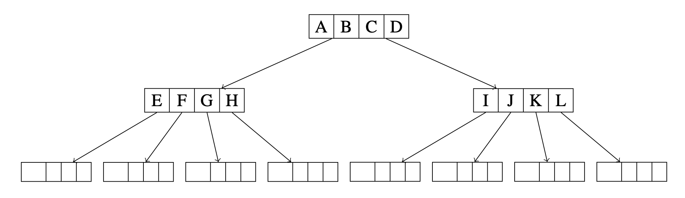
Figures (3)-(5) show, respectively, the original fine mesh, the blocks induced by the R-tree on the cell bounding boxes, and the corresponding tree structure.
In the metis option, the adjacency graph of the fine mesh is constructed with one vertex per cell and edges between face-neighboring cells. This graph is then partitioned by the multilevel graph partitioner METIS into a prescribed number of parts, and each part defines one agglomerate; see [3] for details.
We consider the Poisson problem on the unit square \(\Omega = (0,1)^2 \) with the manufactured exact solution
\[ u(x,y) = \sin(\pi x)\sin(\pi y). \]
The corresponding right-hand side is
\[ f(x,y) = 2\pi^2 \sin(\pi x)\sin(\pi y). \]
This manufactured solution allows us to compute the global \(L^2 \)- and \(H^1 \)-seminorm errors of the discrete solution in order to assess the quality of the numerical approximation.
In this example, an unstructured fine mesh (e.g., a triangular mesh) is used as the starting point. Agglomerates are then constructed by METIS and by the R-tree strategy, leading to different polytopal meshes. The following images compare the resulting agglomerates on the same underlying mesh for two different agglomeration sizes (91 and 364 agglomerates).
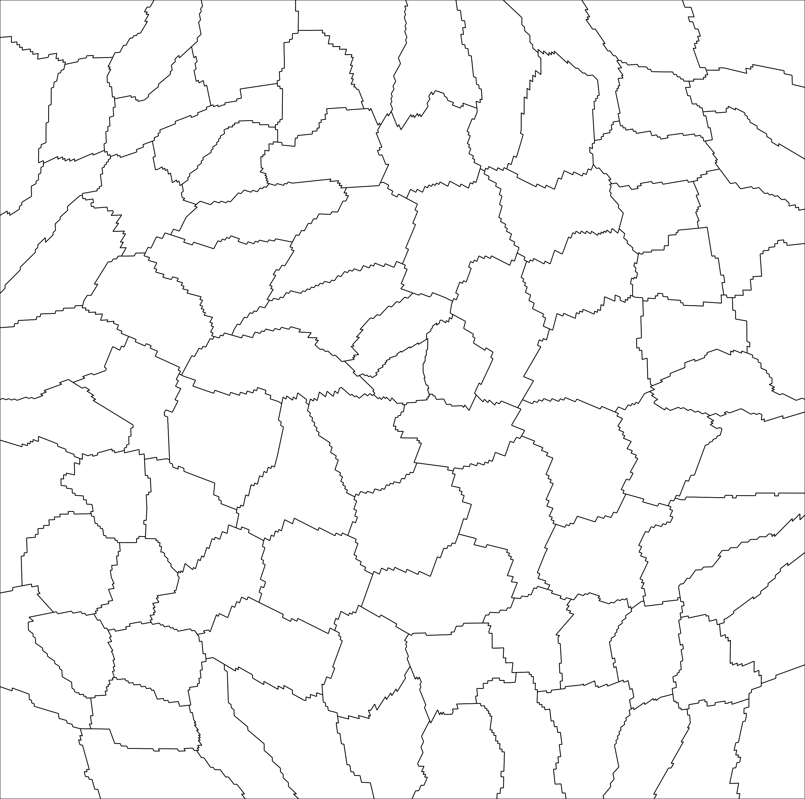
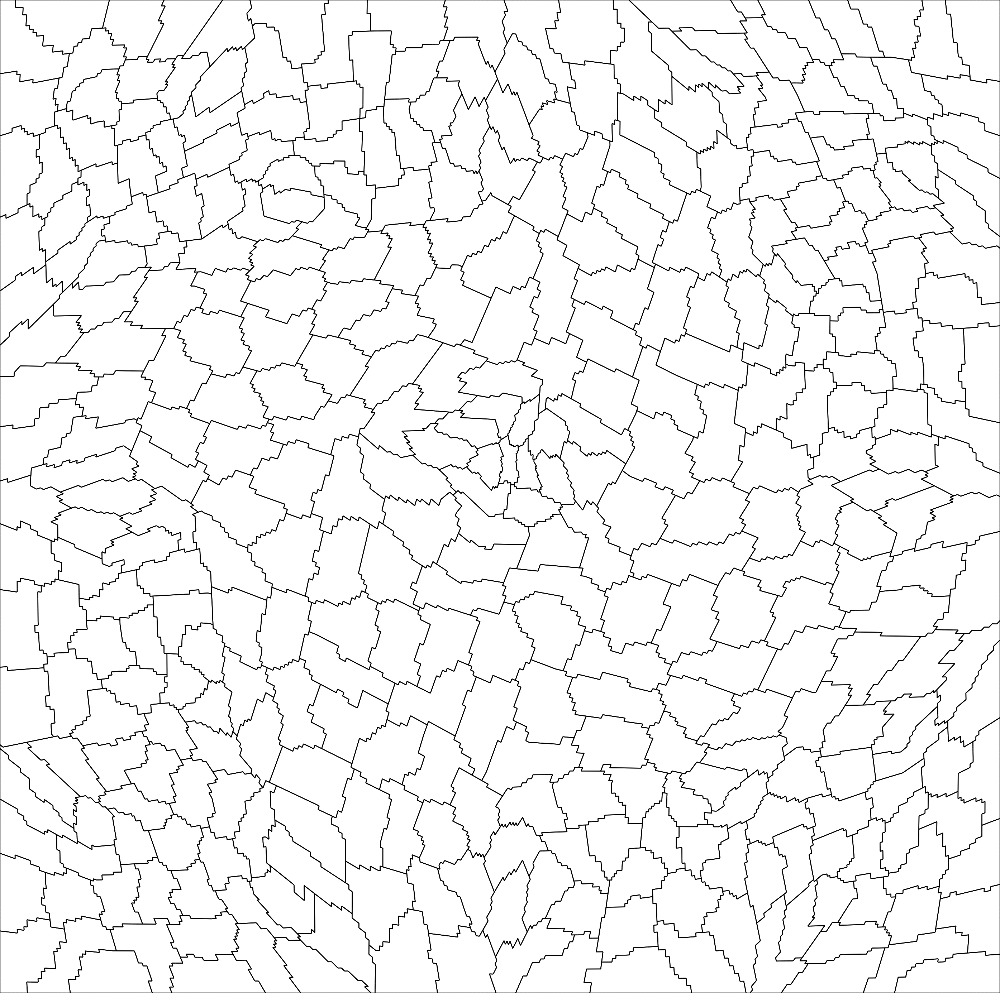
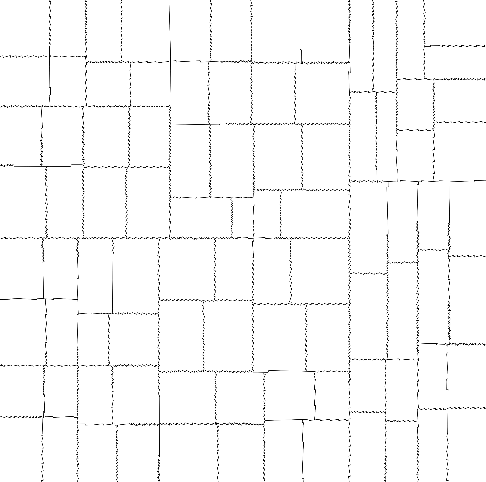
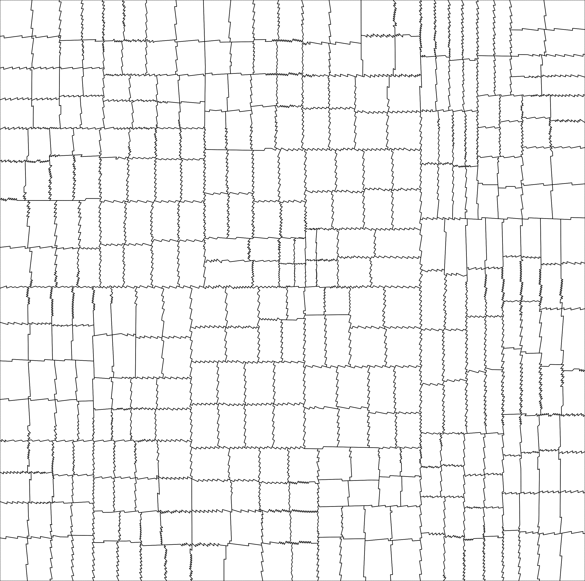
These plots illustrate how the two strategies distribute and shape the agglomerates on the same mesh. In particular, the R-tree approach produces geometry-driven groupings induced by the spatial hierarchy, while METIS produces graph-based partitions of the cell adjacency graph.
To assess the discretization accuracy, we next compare the error behavior under mesh refinement and polynomial refinement. The plots below are obtained by collecting the program outputs over multiple runs and post-processing the reported error data.
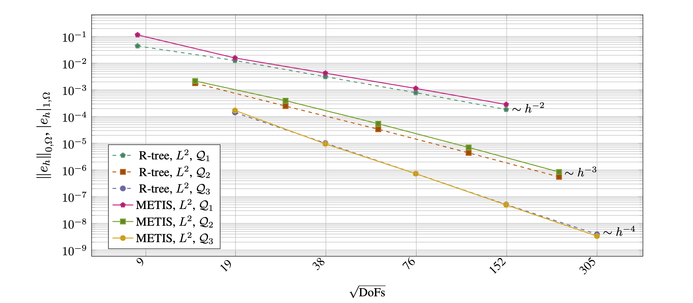
The figure reports the (L^2)- and (H^1)-seminorm errors with respect to the manufactured solution (u). Optimal convergence rates are observed for all polynomial degrees and for both agglomeration strategies. In addition, the curves associated with the R-tree approach are consistently lower than or comparable to those obtained with METIS-based partitioning.
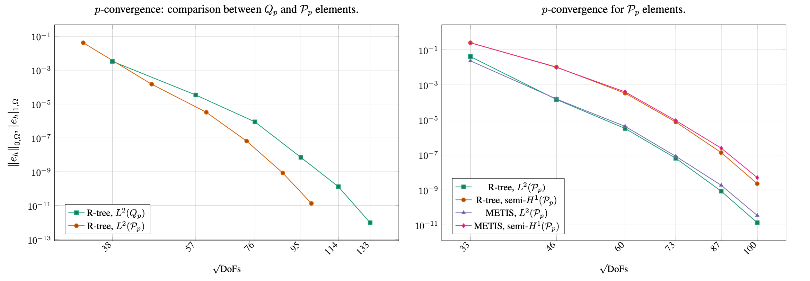
In addition to accuracy, the cost of constructing the agglomerated polytopal meshes is also relevant in practice. The following timing plot compares the wall-clock time required by the R-tree and METIS strategies. The timing values are collected from the program outputs and summarized in post-processing.
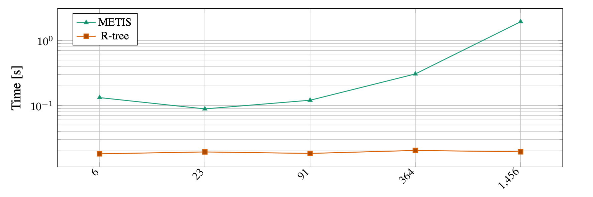
Finally, the program also writes VTU files that can be visualized in ParaView. The next figure shows the interpolated solution field u on the agglomerated mesh (interpolated_solution_rtree_91.vtu), rendered with Surface With Edges.
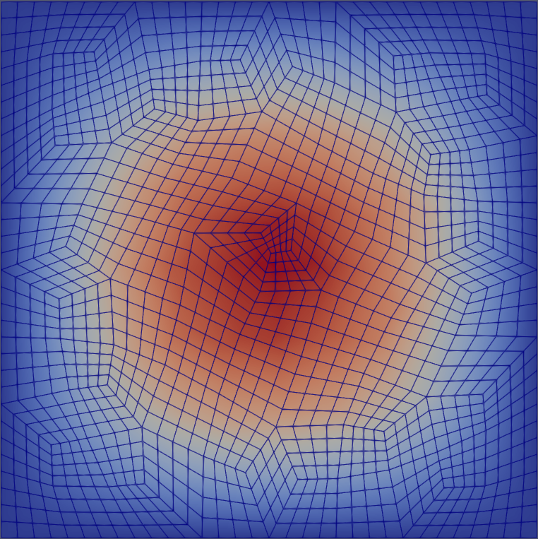
The construction of an R-tree spatial index on an arbitrary fine grid provides a natural and efficient agglomeration strategy with the following features:
These properties make the R-tree approach an attractive alternative to graph-based agglomeration methods (see [3] for more details).